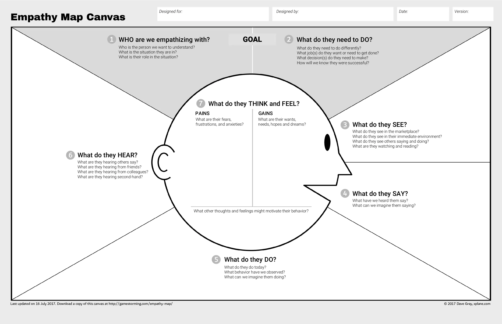

User Empathy: Unit 4
User empathy is the ability to understand the user's needs and feelings. It is the ability to put yourself in
someone else's shoes. It is the ability to understand the user's perspective.
Design thinking process is all about user empathy. It is the first step in the design thinking process.
Why is user empathy important?
User empathy is important because it helps you to understand the user's needs and feelings. It helps you to
understand the user's perspective. It helps you to understand the user's problems and goals
Assuming a Beginner's Mindset
When you are designing a product, you should assume a beginner's mindset. You should assume that the user
knows nothing about your product. You should assume that the user is a beginner. You should assume that the
user is a novice.
How to develop user empathy?
-
Ask What? Why? How?:
Ask the user what they want to do with your product. Ask the user why they want to do that. Ask the user
how they want to do that.
-
Photo and Video:
Take photos and videos of the user using your product. Watch the videos and photos of the user using your
product.
-
Interview the user:
Interview the user. Ask the user what they want to do with your product. Ask the user why they want to do
that. Ask the user how they want to do that.
Brainstorm question ideas both with your team and user.
-
Engaging with extreme users:
Engage with extreme users. Extreme users are users who are very different from your
target audience. Problems are magnified and wasted effort is minimized.
-
Sharing Inspiring Stories:
Share inspiring stories. Share inspiring stories of people who have used your product.
This motivates the user to use your product.
-
Bodystorming:
Bodystorming is a technique that helps you to understand the user's perspective.
It is literally placing yourself in the user's shoes.
Empathy Map
BOBIT:
Brand, organization, Business, Issue, Things.
Similar to a user persona, empathy maps visualize
customer needs, condense customer data into a brief chart, and help you consider what customers want -- not what you
think they want.
Benefits for Empathy Maps:
- Communicate Personas
- Quick way to visualize users
- Categorize Users.
Components of an Empathy Maps:
- Needs
- Influences
- Actions
- Feelings
- Pain
Making a empathy map: do user research, use canvas, stuff like that (Running out of patience here :)
Example of a Empathy Map
